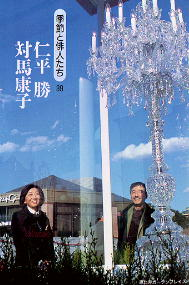
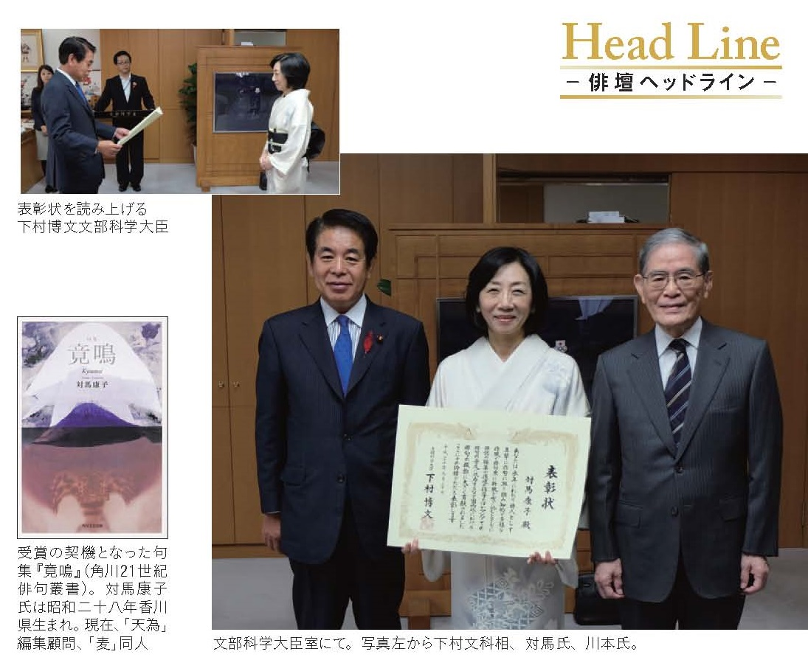

対馬康子(つしま やすこ)高松高校 昭和47年卒
(Last updated:2017.4)
プロフィール
| 1972年 | 高松高校卒業 日本女子大学入学 |
| 1973年 | 後に夫となる西村我尼吾氏に勧められて俳句を始める。 |
| 1976年 | 「麦」同人 |
| 1978年 | 我尼吾氏と結婚 |
| 1981年 | 我尼吾氏のイェール大学留学に伴いコネティカット州ニューヘブンに1983年まで住む。 |
| 1984年 | 海外生活時代の作品により第28回麦作家賞。 |
| 1990年 | 有馬朗人の「天為」創刊に参加。 |
| 1993年 | 我尼吾氏の赴任によりバンコクに移る。 |
| 1994年 | 朝日新聞国際衛星版にて「アジア俳壇」創設、2003年まで続ける。 1996年帰国。 |
| 1999年 | 「松山宣言」起草に参加。同年正岡子規国際俳句賞調整委員 |
| 2001年 | 俳句甲子園審査員。同年「天為」編集長となる。 |
| 2002年 | 芝不器男俳句新人賞選考委員 |
| 2012年 | 現代俳句新人賞選考委員 |

文部科学大臣表彰式 (『俳句』2015.11号より)
| 2015年 | 永年の作句活動、国内外の俳句振興への貢献により、文部科学大臣表彰を受ける。（右の写真） |
| 2015年 | 荒川区「俳句のまち宣言」起草委員会委員長を務めるなど、区の文化振興により、荒川区特別功労者表彰を受ける。 |
現在
「麦」会長「天為」最高顧問
東京都俳句連盟副会長
現代俳句協会、俳人協会、国際俳句交流協会、
日本文藝家協会会員
句集
『愛国』（牧羊社 1986年）『純情』（本阿弥書店 1993年）
『対馬康子集』（邑書林 2004年）
『天之』（富士見書房 2007年）
『竟鳴』（角川21世紀俳句叢書 2014年）
共編著
『新撰21』（邑書林 2010年）『超新撰21』（邑書林 2011年）